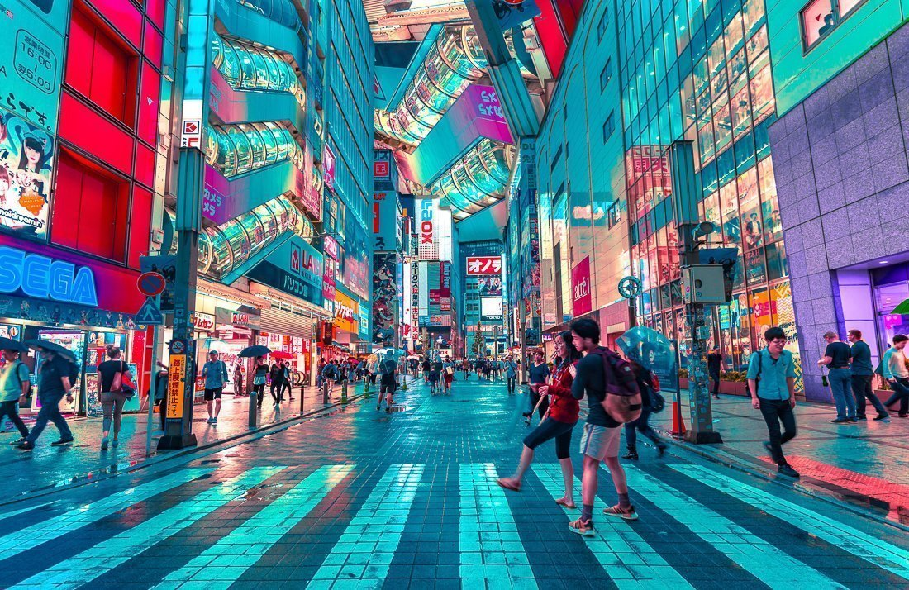

Tokyo, the capital of Japan.

search:
Tokyo (東京, Tōkyō) is Japan's capital and the world's most populous metropolis. It is also one of Japan's 47 prefectures, consisting of 23 central city wards and multiple cities, towns and villages west of the city center. The Izu and Ogasawara Islands are also part of Tokyo. Prior to 1868, Tokyo was known as Edo. A small castle town in the 16th century, Edo became Japan's political center in 1603 when Tokugawa Ieyasu established his feudal government there. A few decades later, Edo had grown into one of the world's most populous cities. With the Meiji Restoration of 1868, the emperor and capital moved from Kyoto to Edo, which was renamed Tokyo ("Eastern Capital"). Large parts of Tokyo were destroyed in the Great Kanto Earthquake of 1923 and in the air raids of 1945.
Tokyo is the largest urban economy in the world by gross domestic product, and is categorized as an Alpha+ city by the Globalization and World Cities Research Network. Part of an industrial region that includes the cities of Yokohama, Kawasaki, and Chiba, Tokyo is Japan's leading center of business and finance. In 2019, it hosted 36 of the Fortune Global 500 companies. In 2020, it ranked fourth on the Global Financial Centres Index, behind New York City, London, and Shanghai. Tokyo has the world's tallest tower, Tokyo Skytree, and the world's largest underground floodwater diversion facility, MAOUDC. The Tokyo Metro Ginza Line is the oldest underground metro line in East Asia (1927). The city has hosted multiple international events, including the 1964 Summer Olympics and Paralympics

Tokyo was originally a small fishing village, Edo, in what was formerly part of the old Musashi Province. Edo was first fortified by the Edo clan, in the late twelfth century. In 1457, Ōta built Edo Castle. In 1590, Ieyasu moved from Mikawa Province (his lifelong base) to the Kantō region. When he became shōgun in 1603, Edo became the center of his ruling. During the subsequent Edo period, Edo grew into one of the largest cities in the world During the Edo era, the city enjoyed a prolonged period of peace known as the Pax Tokugawa, and in the presence of such peace, Edo adopted a stringent policy of seclusion, helped to perpetuate lack of threat to the city. The absence of war-inflicted devastation allowed Edo to devote the majority of its resources to rebuilding in the wake of the consistent fires, earthquakes, other devastating disasters that plagued the city.
| Flag Name | Transcription | Area | Population |
|---|---|---|---|
| Adachi-ku | Adachi Ward | 53.25 | 674,067 |
| Arakawa-ku | Arakawa Ward | 10.16 | 213,648 |
| Bunkyō-ku | Bunkyō Ward | 11.29 | 223,389 |
| Chiyoda-ku | Chiyoda Ward | 11.66 | 59,441 |